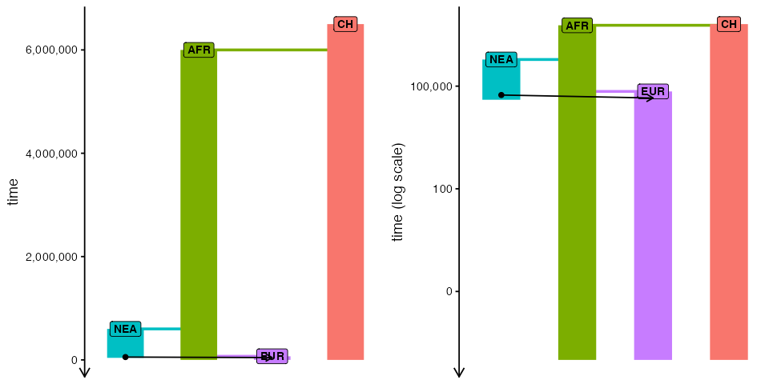
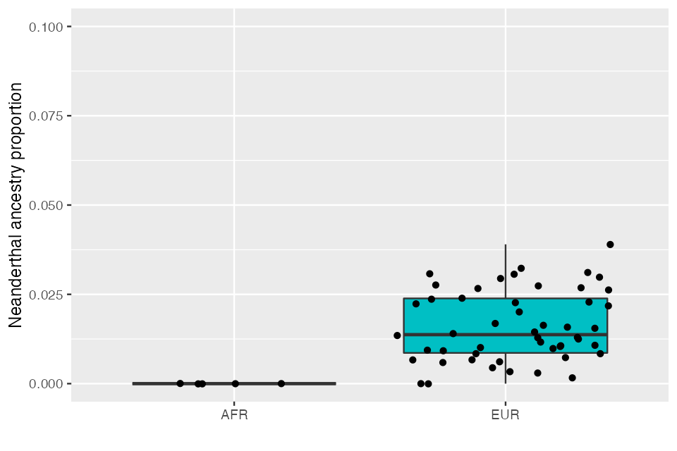
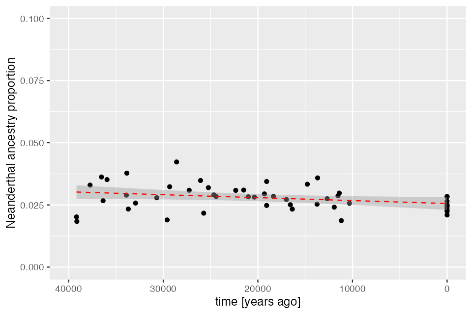
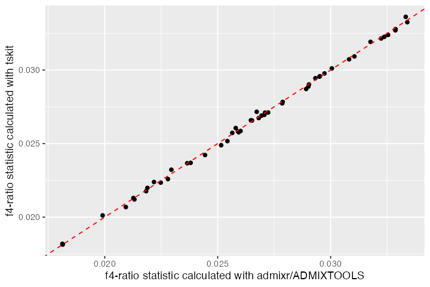

vignettes/vignette-05-tree-sequences.Rmd
vignette-05-tree-sequences.RmdIn this vignette, we will show how to specify sampling events to record individuals in the tree-sequence output file (a procedure which is called “remembering” of individuals in the SLiM context) and how to perform simple analyses using slendr’s interface to the tskit Python library. We will demonstrate these features on a simulation of Neanderthal introgression into anatomically modern humans. Specifically, we will show how to estimate the amount of Neanderthal ancestry using \(f\)-statistics calculated directly on the tree-sequence data structure generated by a slendr model, all entirely from R.
First, let’s set up a simple non-spatial model of Neanderthal introgression using slendr. This is essentially the same procedure which we have shown in another vignette introducing non-spatial slendr models. This is no different from a spatial model, except that we left out the map argument in calling population().
#>
#> Attaching package: 'dplyr'#> The following objects are masked from 'package:stats':
#>
#> filter, lag#> The following objects are masked from 'package:base':
#>
#> intersect, setdiff, setequal, union
set.seed(314159)
# create the ancestor of everyone and a chimpanzee outgroup
# (we set both N = 1 to reduce the computational time for this model)
anc <- population("ANC", time = 6.5e6, N = 1)
chimp <- population("CH", parent = anc, time = 6e6, N = 1)
# two populations of anatomically modern humans: Africans and Europeans
afr <- population("AFR", parent = anc, time = 600e3, N = 10000)
eur <- population("EUR", parent = afr, time = 70e3, N = 5000)
# Neanderthal population splitting at 600 ky ago from modern humans
# (becomes extinct by 40 ky ago)
nea <- population("NEA", parent = anc, time = 600e3, N = 1000, remove = 40e3)
# 3% Neanderthal introgression into Europeans between 55-50 ky ago
gf <- geneflow(from = nea, to = eur, rate = 0.03, start = 55000, end = 50000)
model <- compile(
populations = list(anc, chimp, nea, afr, eur), geneflow = gf,
generation_time = 30,
path = file.path(tempdir(), "introgression"), overwrite = TRUE
)Here’s our toy model visualized as a graph. Not particularly illuminating in this simple example, but it’s always worth keeping in mind that such graph is embedded within every slendr model and can be always invoked to make sure the model you’re setting up is correct:
plot_graph(model) + ggplot2::theme(legend.position = "none")
Now that we have defined a model, how do we sample data from it? Ideally, we would like to to schedule sampling events at a given time, sampling a defined number of individuals from a given population. This is why slendr provides a function sampling() which serves to define such sampling schedule automatically and enforces that only populations which are already (i.e. after their appearance in the simulation) or still (before they are removed from the simulation) present will be sampled from.
In our example, we want to sample two Neanderthal individuals (the older one being the Altai Neanderthal, the younger one Vindija Neanderthal). These two genomes are what we need to estimate Neanderthal ancestry proportion using a so-called \(f_4\)-ratio statistic (more on that below):
#> # A tibble: 2 × 7
#> time pop n y_orig x_orig y x
#> <int> <chr> <int> <lgl> <lgl> <lgl> <lgl>
#> 1 40000 NEA 1 NA NA NA NA
#> 2 70000 NEA 1 NA NA NA NAAs you can see, the sampling() function simply accepts the vector of times at which remembering should be schedule, and then a list of pairs (<slendr population>, <number of individuals>) encoding from which populations should how many individuals be remembered at time points given in the times vector.
Next, we want to sample some present-day individuals: an outgroup representing a chimpanzee, and a couple of Africans and Europeans:
present_samples <- sampling(model, times = 0, list(chimp, 1), list(afr, 5), list(eur, 10))
present_samples#> # A tibble: 3 × 7
#> time pop n y_orig x_orig y x
#> <int> <chr> <int> <lgl> <lgl> <lgl> <lgl>
#> 1 0 CH 1 NA NA NA NA
#> 2 0 AFR 5 NA NA NA NA
#> 3 0 EUR 10 NA NA NA NAAs you can see above, the sampling() function returns a plain old data frame with a very simple structure with three columns: time, population name, and the number of individuals. This means that you can define sampling events using whatever input data you might already have available (such as radiocarbon-dated ancient DNA samples from an Excel sheet from some publication). For instance, there has been a lot of interest to estimate the trajectory of Neanderthal ancestry in Europe over time using ancient DNA data from anatomically modern human individuals (also called early modern humans, EMH) across the last couple of tens of thousands of years. We can simulate something close to the available EMH ancient DNA data set over the last 50 thousand years by running doing this:
emh_samples <- sampling(model, times = runif(n = 40, min = 10000, max = 40000), list(eur, 1))
emh_samples#> # A tibble: 40 × 7
#> time pop n y_orig x_orig y x
#> <int> <chr> <int> <lgl> <lgl> <lgl> <lgl>
#> 1 10319 EUR 1 NA NA NA NA
#> 2 11187 EUR 1 NA NA NA NA
#> 3 11395 EUR 1 NA NA NA NA
#> 4 11529 EUR 1 NA NA NA NA
#> 5 11927 EUR 1 NA NA NA NA
#> 6 12675 EUR 1 NA NA NA NA
#> 7 13689 EUR 1 NA NA NA NA
#> 8 13744 EUR 1 NA NA NA NA
#> 9 14774 EUR 1 NA NA NA NA
#> 10 16361 EUR 1 NA NA NA NA
#> # … with 30 more rowsThis samples a single ancient European individuals at randomly chosen times between 40 and 10 ky ago.
One nice feature of the sampling() function is that it only schedules sampling events for a population, if that population is present in the simulation at a given time. This makes it possible to simply take a wide time range for sampling, specify all populations and sizes of the samples, and let the function generate sampling events only for populations present at each time. If for some reason a stricter control over sampling is required, this behavior can be switched off by setting strict = TRUE like this:
# this attempts to sample a Neanderthal individual at a point when Neanderthals
# are already extinct, resulting in an error
sampling(model, times = 10000, list(nea, 1), strict = TRUE)Error: Cannot schedule sampling for 'NEA' at time 10000 because the population will not be present in the simulation at that point. Consider running this function with `strict = FALSE` which will automatically retain only valid sampling events.Now that we already have the model object ready, we can simulate data from it, sampling individuals according to our sampling schedule. We do this by calling the slim() function as usual and specifying the sampling events with the sampling = argument. Note that we bind the individual sampling schedule data frames using the rbind function provided by base R (as we show above, the sampling schedule really is just a data frame and we can manipulate it as such):
When we execute the model, slendr will instruct SLiM to save the output of the simulation as a tree sequence file. By default, the file is stored in the model directory:
ts_file <- file.path(model$path, "output_slim.trees")
file.exists(ts_file)#> [1] TRUETree-sequences are one of the most revolutionary developments in population genetics in the last couple of decades for a number of reasons. One of them is the possibility to store extremely large data sets succinctly by encoding the entire evolutionary history of a sample of individuals as a series of correlated tree genealogies along the genome.
Going into too much detail on this topic is clearly beyond the scope of this tutorial, especially because everything is explain much better elsewhere. Instead, what we will demonstrate in the rest of this vignette is how you can access and manipulate tree-sequence outputs generated by slendr models and perform various statistics on them using Python modules tskit and pyslim directly from slendr, without having to leave R! The key is a magical R package reticulate which creates a seamless binding of Python modules with R. This means that even if you don’t know Python, slendr allows you to do do quite a lot with tree-sequences in R.
Of course, if you are a proficient Python user, it needs to be said that once you have the tree-sequence file generated by slendr & SLiM, you can easily perform every conceivable analysis directly using tskit. The intention here is to show how you can continue working on the tree-sequence files in R even after you have run the entire slendr simulation.
First, in order to be able to interface with tskit and pyslim using the reticulate package, you will need a working Python environment with the required Python modules pyslim, tskit and msprime already installed.
Because setting up Python environments can be quite a hassle, slendr provides a single function setup_env() to make things easier. If you call it without any arguments, slendr will automatically download, install, and setup a completely separate Python environment (based on the “miniconda” distribution) just for slendr and activate it in the background. Even if you’re an advanced Python user, I recommend going through this route because it will make sure that all dependencies are at their right versions that have been tested in slendr.
A couple of notes:
It is important to stress that setup_env() will not interfere in any way with any of the Python installations you might already have on your computer. The Python installation and environment will be entirely isolated and used just for the purpose of slendr workflows.
If you insist on managing your own Python environment, that’s OK too. Take a look at this guide. You will be interested in the function reticulate::user_virtualenv() or reticulate::use_condaenv() which is what our own setup_env() uses under the hood. You will need and environment at least Python version 3.9 or higher, with tskit 0.4.1, msprime 1.1.0, pyslim 0.700, and for running the msprime back end script of slendr also pandas 1.3.5. Higher versions might also work, but those exact versions is what slendr is being developed and tested on.
With all that introduction out of the way, let’s now activate the slendr Python environment (potentially installing it if it’s not present yet):
#> The slendr interface to required Python modules has been successfully activated.We can use another built-in function check_env() to make sure that slendr installed and configured the correct environment for us:
#> Summary of the currently active Python environment:
#>
#> Python binary: /Users/martin_petr/Library/r-miniconda/envs/automatic_slendr_python_env/bin/python
#> Python version: 3.8.12 | packaged by conda-forge | (default, Jan 30 2022, 23:36:06) [Clang 11.1.0 ]
#>
#> slendr requirements:
#> - tskit: version 0.4.1 ✓
#> - msprime: version 1.1.0 ✓
#> - pyslim: version 0.700 ✓Now we’re good to go and ready to analyse tree sequence outputs in R!
With the technicalities out of the way, we can now load the tree-sequence file saved by SLiM using the slendr function ts_load(). Optionally, we can also instruct this function to simplify the tree-sequence to only the individuals that we explicitly sampled (recall the sampling schedule we set up with the sampling() function above). What slendr does here is provide an R-friendly interface to tskit and pyslim, essentially reproducing steps in this tutorial in a single R command. Note that we have to provide the model object generated by compile() above in order to have all model annotation information for the simulated tree-sequence data (we have to do this only once, and only during loading):
ts <- ts_load(model)
ts#> ╔═══════════════════════════╗
#> ║TreeSequence ║
#> ╠═══════════════╤═══════════╣
#> ║Trees │ 56441║
#> ╟───────────────┼───────────╢
#> ║Sequence Length│ 10000000║
#> ╟───────────────┼───────────╢
#> ║Time Units │generations║
#> ╟───────────────┼───────────╢
#> ║Sample Nodes │ 30088║
#> ╟───────────────┼───────────╢
#> ║Total Size │ 20.4 MiB║
#> ╚═══════════════╧═══════════╝
#> ╔═══════════╤══════╤════════╤════════════╗
#> ║Table │Rows │Size │Has Metadata║
#> ╠═══════════╪══════╪════════╪════════════╣
#> ║Edges │268943│ 8.2 MiB│ No║
#> ╟───────────┼──────┼────────┼────────────╢
#> ║Individuals│ 71917│ 6.9 MiB│ Yes║
#> ╟───────────┼──────┼────────┼────────────╢
#> ║Migrations │ 0│ 8 Bytes│ No║
#> ╟───────────┼──────┼────────┼────────────╢
#> ║Mutations │ 0│ 1.2 KiB│ No║
#> ╟───────────┼──────┼────────┼────────────╢
#> ║Nodes │ 90201│ 3.3 MiB│ Yes║
#> ╟───────────┼──────┼────────┼────────────╢
#> ║Populations│ 5│ 2.6 KiB│ Yes║
#> ╟───────────┼──────┼────────┼────────────╢
#> ║Provenances│ 1│33.0 KiB│ No║
#> ╟───────────┼──────┼────────┼────────────╢
#> ║Sites │ 0│16 Bytes│ No║
#> ╚═══════════╧══════╧════════╧════════════╝We can see that the tree-sequence data is very large and contains many more individuals than we need (much more than we explicitly specified for sampling)— a lot more than what we scheduled for sampling! To avoid this issue, ts_load() accepts an optional argument simplify which triggers the simplification process to narrow down the set of recorded individuals just to those that we explicitly remembered:
ts <- ts_load(model, simplify = TRUE)
ts#> ╔═══════════════════════════╗
#> ║TreeSequence ║
#> ╠═══════════════╤═══════════╣
#> ║Trees │ 17204║
#> ╟───────────────┼───────────╢
#> ║Sequence Length│ 10000000║
#> ╟───────────────┼───────────╢
#> ║Time Units │generations║
#> ╟───────────────┼───────────╢
#> ║Sample Nodes │ 116║
#> ╟───────────────┼───────────╢
#> ║Total Size │ 3.8 MiB║
#> ╚═══════════════╧═══════════╝
#> ╔═══════════╤═════╤═════════╤════════════╗
#> ║Table │Rows │Size │Has Metadata║
#> ╠═══════════╪═════╪═════════╪════════════╣
#> ║Edges │65125│ 2.0 MiB│ No║
#> ╟───────────┼─────┼─────────┼────────────╢
#> ║Individuals│ 9643│943.5 KiB│ Yes║
#> ╟───────────┼─────┼─────────┼────────────╢
#> ║Migrations │ 0│ 8 Bytes│ No║
#> ╟───────────┼─────┼─────────┼────────────╢
#> ║Mutations │ 0│ 1.2 KiB│ No║
#> ╟───────────┼─────┼─────────┼────────────╢
#> ║Nodes │ 9705│360.8 KiB│ Yes║
#> ╟───────────┼─────┼─────────┼────────────╢
#> ║Populations│ 5│ 2.6 KiB│ Yes║
#> ╟───────────┼─────┼─────────┼────────────╢
#> ║Provenances│ 2│ 33.5 KiB│ No║
#> ╟───────────┼─────┼─────────┼────────────╢
#> ║Sites │ 0│ 16 Bytes│ No║
#> ╚═══════════╧═════╧═════════╧════════════╝By default, simplification in ts_load() simplified the tree-sequence down to only remembered individuals (i.e. those we explicitly scheduled for sampling). We can also narrow down the simplification to a defined set of individuals using the simplify_to = argument. Internally, simplification is implemented in a dedicated function ts_simplify() which we can always call explicitly, like this:
ts_small <- ts_simplify(ts, simplify_to = c("CH_1", "NEA_1", "NEA_2", "AFR_1", "AFR_2", "EUR_20", "EUR_50"))
ts_small#> ╔═══════════════════════════╗
#> ║TreeSequence ║
#> ╠═══════════════╤═══════════╣
#> ║Trees │ 7000║
#> ╟───────────────┼───────────╢
#> ║Sequence Length│ 10000000║
#> ╟───────────────┼───────────╢
#> ║Time Units │generations║
#> ╟───────────────┼───────────╢
#> ║Sample Nodes │ 14║
#> ╟───────────────┼───────────╢
#> ║Total Size │ 1.5 MiB║
#> ╚═══════════════╧═══════════╝
#> ╔═══════════╤═════╤═════════╤════════════╗
#> ║Table │Rows │Size │Has Metadata║
#> ╠═══════════╪═════╪═════════╪════════════╣
#> ║Edges │24698│771.8 KiB│ No║
#> ╟───────────┼─────┼─────────┼────────────╢
#> ║Individuals│ 3651│358.4 KiB│ Yes║
#> ╟───────────┼─────┼─────────┼────────────╢
#> ║Migrations │ 0│ 8 Bytes│ No║
#> ╟───────────┼─────┼─────────┼────────────╢
#> ║Mutations │ 0│ 1.2 KiB│ No║
#> ╟───────────┼─────┼─────────┼────────────╢
#> ║Nodes │ 3659│136.5 KiB│ Yes║
#> ╟───────────┼─────┼─────────┼────────────╢
#> ║Populations│ 5│ 2.6 KiB│ Yes║
#> ╟───────────┼─────┼─────────┼────────────╢
#> ║Provenances│ 3│ 34.0 KiB│ No║
#> ╟───────────┼─────┼─────────┼────────────╢
#> ║Sites │ 0│ 16 Bytes│ No║
#> ╚═══════════╧═════╧═════════╧════════════╝Similarly, slendr provides a function ts_recapitate() which performs [recapitation]https://tskit.dev/pyslim/docs/latest/tutorial.html#recapitation). Again, we can do this in one go, by specifying recapitate = TRUE in the call to ts_load() after specifying a couple of additional arguments required for recapitation (see the pyslim documentation in the recapitation section for more detail):
ts <- ts_load(model, recapitate = TRUE, simplify = TRUE,
recombination_rate = 1e-8, Ne = 10000)If we were to run this code chunk, we would get a message informing that the recapitation was not necessary because all genealogies in the tree-sequence are already coalesced (i.e. have each only one root node). We can do this check ourselves by calling another slendr function ts_coalesced() which verifies that all trees in the sequence are fully coalesced:
ts_coalesced(ts)#> [1] TRUEYou might have noticed that we did not simulate any mutations during the SLiM run. This is for computational efficiency. Luckily, the tree-sequence contains the complete history of a sample of individuals which makes it very easy to sprinkle mutations on the genealogies after this simulation is over. We can add mutations a given rate by running:
ts <- ts_mutate(ts, mutation_rate = 1e-8, random_seed = 314159)
ts#> ╔═══════════════════════════╗
#> ║TreeSequence ║
#> ╠═══════════════╤═══════════╣
#> ║Trees │ 17204║
#> ╟───────────────┼───────────╢
#> ║Sequence Length│ 10000000║
#> ╟───────────────┼───────────╢
#> ║Time Units │generations║
#> ╟───────────────┼───────────╢
#> ║Sample Nodes │ 116║
#> ╟───────────────┼───────────╢
#> ║Total Size │ 7.2 MiB║
#> ╚═══════════════╧═══════════╝
#> ╔═══════════╤═════╤═════════╤════════════╗
#> ║Table │Rows │Size │Has Metadata║
#> ╠═══════════╪═════╪═════════╪════════════╣
#> ║Edges │65125│ 2.0 MiB│ No║
#> ╟───────────┼─────┼─────────┼────────────╢
#> ║Individuals│ 9643│943.5 KiB│ Yes║
#> ╟───────────┼─────┼─────────┼────────────╢
#> ║Migrations │ 0│ 8 Bytes│ No║
#> ╟───────────┼─────┼─────────┼────────────╢
#> ║Mutations │58284│ 2.1 MiB│ No║
#> ╟───────────┼─────┼─────────┼────────────╢
#> ║Nodes │ 9705│360.8 KiB│ Yes║
#> ╟───────────┼─────┼─────────┼────────────╢
#> ║Populations│ 5│ 2.6 KiB│ Yes║
#> ╟───────────┼─────┼─────────┼────────────╢
#> ║Provenances│ 3│ 34.2 KiB│ No║
#> ╟───────────┼─────┼─────────┼────────────╢
#> ║Sites │58089│ 1.4 MiB│ No║
#> ╚═══════════╧═════╧═════════╧════════════╝Even this step can be performed in one go throught the ts_load function like this:
ts <- ts_load(model, recapitate = TRUE, simplify = TRUE, random_seed = 314159,
recombination_rate = 1e-8, Ne = 10000, mutation_rate = 1e-8)Having done that, we can calculate some basic statistics on our simulated data.
However, before we do that, we would first like to note that everything that we do in the rest of this vignette (i.e. whenever we call a function with the prefix ts_*() in slendr), we are interfacing with the tskit Python module under the hood. Our goal is to capture most of the analyses one might want to perform on tree-sequences in R and wrap them in a neat interface indistinguishable from any other R function—this is, after all, the reason why reticulate has been created in the first place (making various Python data science modules appear as if they were regular R packages).
Note: The visualisation of trees and tree-sequences in slendr is currently still work-in-progress. For a much more comprehensive overview of SVG plotting in tskit see the official tutorial on the subject.
We have spend a lot of time talking about how powerful the tskit library is. Another great example is tree(-sequence) visualisation. tskit implements visualisation of data in an SVG format which we can use for quick interactive plotting directly from the R console. First, we introduce a function ts_tree() which allows us to extract one tree from the tree-sequence (either an i-th tree in the sequence, or a tree overlapping an i-th position of the simulated genome, depending on the value of its mode argument):
# take the 1st tree in the sequence (mode = "index" by default)
tree <- ts_tree(ts_small, i = 1)
tree#> ╔═════════════════════════════════╗
#> ║Tree ║
#> ╠═══════════════════╤═════════════╣
#> ║Index │ 0║
#> ╟───────────────────┼─────────────╢
#> ║Interval │0-2230 (2230)║
#> ╟───────────────────┼─────────────╢
#> ║Roots │ 1║
#> ╟───────────────────┼─────────────╢
#> ║Nodes │ 27║
#> ╟───────────────────┼─────────────╢
#> ║Sites │ 0║
#> ╟───────────────────┼─────────────╢
#> ║Mutations │ 0║
#> ╟───────────────────┼─────────────╢
#> ║Total Branch Length│ 472370║
#> ╚═══════════════════╧═════════════╝We can then visualize the tree by calling:
ts_draw(tree, width = 1000, height = 600)If we specify labels = TRUE and provide the tree-sequence object itself (because that carries all the required model metadata such as individual names), we get a slightly more readable figure. We can also provide keyword arguments specific to tskit draw_svg() function, such as time_scale here:
ts_draw(tree, width = 1000, height = 600, labels = TRUE, time_scale = "rank")As we mentioned in the previous section, the goal of this vignette is to show how to use slendr to perform the main tree-sequence operations using a convenient R interface to tskit. However, you should always keep in mind that you are not restricted to a subset of tskit functionality that slendr translated to R (i.e. all functions with the prefix ts_). Thanks to the incredible R package reticulate, you can access Python methods and object variables directly, using the $ operator.
As an example, instead of calling the function ts_coalesced() on the tree-sequence as we did above, we could check that all trees are coalesced by running the following snippet instead (note that this is very inefficient and we’re only doing the operation for the first one hundred trees):
# iterate over all trees in the tree-sequence and check if each
# has only one root (i.e. is fully coalesced) - note that Python
# lists are 0-based, which is something we need to take care of
all(sapply(seq_len(ts$num_trees)[1:100],
function(i) ts$at_index(i - 1)$num_roots == 1))We believe it makes sense to use the R interface whenever possible (even if only because it makes many operations a little bit more convenient). However, if there is some functionality in slendr missing, you can always resort to accessing the Python objects directly as we have just demonstrated. You can verify that all methods and attributes of a Python tree-sequence object is still accessible in R:
names(ts)#> [1] "alignments" "allele_frequency_spectrum"
#> [3] "as_fasta" "as_nexus"
#> [5] "aslist" "at"
#> [7] "at_index" "breakpoints"
#> [9] "coiterate" "count_topologies"
#> [11] "delete_intervals" "delete_sites"
#> [13] "diffs" "discrete_genome"
#> [15] "discrete_time" "divergence"
#> [17] "diversity" "draw_svg"
#> [19] "draw_text" "dump"
#> [21] "dump_tables" "dump_text"
#> [23] "edge" "edge_diffs"
#> [25] "edges" "edgesets"
#> [27] "equals" "f2"
#> [29] "f3" "f4"
#> [31] "file_uuid" "first"
#> [33] "first_generation_individuals" "Fst"
#> [35] "genealogical_nearest_neighbours" "general_stat"
#> [37] "genetic_relatedness" "genotype_matrix"
#> [39] "get_ll_tree_sequence" "get_num_mutations"
#> [41] "get_num_nodes" "get_num_records"
#> [43] "get_num_sites" "get_num_trees"
#> [45] "get_pairwise_diversity" "get_population"
#> [47] "get_sample_size" "get_samples"
#> [49] "get_sequence_length" "get_time"
#> [51] "haplotypes" "has_individual_parents"
#> [53] "has_reference_sequence" "ibd_segments"
#> [55] "individual" "individual_ages"
#> [57] "individual_ages_at" "individual_locations"
#> [59] "individual_parents" "individual_populations"
#> [61] "individual_times" "individuals"
#> [63] "individuals_alive_at" "kc_distance"
#> [65] "keep_intervals" "last"
#> [67] "ll_tree_sequence" "load"
#> [69] "load_tables" "ltrim"
#> [71] "max_root_time" "mean_descendants"
#> [73] "metadata" "metadata_schema"
#> [75] "migration" "migrations"
#> [77] "model_type" "mutation"
#> [79] "mutation_at" "mutations"
#> [81] "nbytes" "newick_trees"
#> [83] "node" "nodes"
#> [85] "nucleotide_at" "num_edges"
#> [87] "num_individuals" "num_migrations"
#> [89] "num_mutations" "num_nodes"
#> [91] "num_populations" "num_provenances"
#> [93] "num_samples" "num_sites"
#> [95] "num_trees" "pairwise_diversity"
#> [97] "parse_windows" "population"
#> [99] "populations" "provenance"
#> [101] "provenances" "recapitate"
#> [103] "records" "reference_sequence"
#> [105] "rtrim" "sample_count_stat"
#> [107] "sample_size" "samples"
#> [109] "segregating_sites" "sequence_length"
#> [111] "simplify" "site"
#> [113] "sites" "slim_generation"
#> [115] "slim_provenance" "slim_provenances"
#> [117] "slim_time" "subset"
#> [119] "table_metadata_schemas" "tables"
#> [121] "tables_dict" "Tajimas_D"
#> [123] "time_units" "to_macs"
#> [125] "to_nexus" "trait_correlation"
#> [127] "trait_covariance" "trait_linear_model"
#> [129] "trait_regression" "trees"
#> [131] "trim" "union"
#> [133] "variants" "write_fasta"
#> [135] "write_nexus" "write_vcf"
#> [137] "Y1" "Y2"
#> [139] "Y3"In fact, you will recognize some of the elements in the output above from examples involving ts_ functions in this vignette! In short, there is no blackbox—slendr only provides a slightly more convenient layer over tskit for R users.
In addition to being a revolutionary breakthrough in terms of computation efficiency, many statistics that we are often interested in population genetics are a natural consequence of having a direct access to tree sequence genealogies, simply because those genealogies capture the true demographic history of a sample. Again, we can’t go into too much detail here but we encourage you to take a look at a paper by Ralph et al. on the duality between statistics expressed in terms of branch lengths and the traditional summaries based on samples of genetic variation.
For instance, we have functions such as ts_f2(), ts_f3(), ts_f4() and ts_f4ratio() which calculate the well-known set of Patterson’s \(f\)-statistics:
# f2 is a measure of the branch length connecting A and B
ts_f2(ts, A = "EUR_1", B = "AFR_1")#> # A tibble: 1 × 3
#> A B f2
#> <chr> <chr> <dbl>
#> 1 EUR_1 AFR_1 0.0000213
# f4 is a measure of the drift shared between A and B after their split from C
ts_f3(ts, A = "EUR_1", B = "AFR_1", C = "CH_1")#> # A tibble: 1 × 4
#> A B C f3
#> <chr> <chr> <chr> <dbl>
#> 1 EUR_1 AFR_1 CH_1 0.0000032
# this value should be very close to zero (no introgression in Africans)
ts_f4(ts, "AFR_1", "AFR_2", "NEA_1", "CH_1", mode = "branch")#> # A tibble: 1 × 5
#> W X Y Z f4
#> <chr> <chr> <chr> <chr> <dbl>
#> 1 AFR_1 AFR_2 NEA_1 CH_1 0.0145
# this value should be significantly negative (many more ABBA sites
# compared to BABA site due to the introgression into Europeans)
ts_f4(ts, "AFR_1", "EUR_1", "NEA_1", "CH_1", mode = "branch")#> # A tibble: 1 × 5
#> W X Y Z f4
#> <chr> <chr> <chr> <chr> <dbl>
#> 1 AFR_1 EUR_1 NEA_1 CH_1 -595.These functions accept a mode = argument, specifying whether the statistics should be calculated using mutation site patterns (mode = "site", the default), branch lengths (mode = "branch"), or for each node (mode = "node"), as well as the windows argument, similarly to other “multiway” statistics implemented by tskit. See the relevant sections of the official tskit documentation for more on this topic.
Note that in the previous chunk we refered to individuals by their names (not numeric IDs of nodes as you would do it with tskit in Python). We allow this for readability and to make it easier to see which individuals are which based on the specified sampling schedule (the names are assigned to individuals based on the order of their sampling). We can get an overview of the individuals scheduled for sampling (i.e. permanently remembered) and their names with a helper function ts_samples():
ts_samples(ts)#> # A tibble: 58 × 3
#> name time pop
#> <chr> <int> <chr>
#> 1 NEA_1 70000 NEA
#> 2 NEA_2 40000 NEA
#> 3 EUR_1 39170 EUR
#> 4 EUR_2 39134 EUR
#> 5 EUR_3 37738 EUR
#> 6 EUR_4 36530 EUR
#> 7 EUR_5 36362 EUR
#> 8 EUR_6 35944 EUR
#> 9 EUR_7 33900 EUR
#> 10 EUR_8 33853 EUR
#> # … with 48 more rowsThat said, if you would like to run some statistics on nodes rather than on individuals, you can do it simply by using integer IDs instead of character names in each function’s interface.
Let’s try to put these new tools to practice and estimate the proportion of Neanderthal ancestry in Africans and Europeans in our simulated data. We can do this using the Patterson’s \(f_4\)-ratio statistic implemented in the ts_f4ratio() function in slendr (you can find more information about this particular version of the statistic in this paper):
# first get a table of simulated African and European individuals in the tree-sequence
inds <- ts_samples(ts) %>% dplyr::filter(pop %in% c("AFR", "EUR"))
# estimate the amounts of Neanderthal ancestry in these individuals and add
# these values to the table
inds$ancestry <- ts_f4ratio(ts, X = inds$name, "NEA_1", "NEA_2", "AFR_1", "CH_1")$alphaIf we now summarise the inferred Neanderthal distribution in both populations, we see that there is no Neanderthal ancestry in Africans (as expected by our model–Africans did not receive a Neanderthal introgression pulse) but there is a small proportion of Neanderthal ancestry in Europeans (consistent with the 3% introgression pulse we simulated between):
ggplot(inds, aes(pop, ancestry, fill = pop)) +
geom_boxplot() +
geom_jitter() +
labs(y = "Neanderthal ancestry proportion", x = "") +
theme(legend.position = "none") +
coord_cartesian(ylim = c(0, 0.1))
This is exactly as we specified in the model configuration above, suggesting that our simulations work as they should. You can see that there is quite a bit of noise but that’s because we simulated only a small amount of sequence.
We can also plot the trajectory of Neanderthal ancestry in Europe during the time-window for which we have simulated ancient and present-day DNA samples:
dplyr::filter(inds, pop == "EUR") %>%
ggplot(aes(time, ancestry)) +
geom_point() +
geom_smooth(method = "lm", linetype = 2, color = "red", size = 0.5) +
xlim(40000, 0) + coord_cartesian(ylim = c(0, 0.1)) +
labs(x = "time [years ago]", y = "Neanderthal ancestry proportion")#> `geom_smooth()` using formula 'y ~ x'
Again, this is a result consistent with empirical estimates of Neanderthal ancestry using ancient DNA data.
In case you would like to verify some f-statistics results using the venerable ADMIXTOOLS software (see the linked paper which formally introduced these statistics in the first place), you can convert the tree-sequence data to a file format called EIGENSTRAT using the ts_eigenstrat() function. The file conversion is internally handled by the R package admixr and returns an EIGENSTRAT object which ties all individual EIGENSTRAT file components together (see the tutorial to admixr for an extensive overview). admixr is an R package for running automated ADMIXTOOLS analyses entirely from R and makes these types of analyses very convenient.
snps <- ts_eigenstrat(ts, prefix = file.path(tempdir(), "eigenstrat", "data"))#> 121 multiallelic sites (0.208% out of 58089 total) detected and removedRunning an admixr analysis is then as easy as plugging the object into an admixr function. For instance, we can estimate the proportion of Neanderthal ancestry in a couple of individuals \(X\) like this (admixr calls this proportion alpha):
library(admixr)
f4ratio(data = snps, X = c("EUR_1", "EUR_2", "AFR_2"),
A = "NEA_1", B = "NEA_2", C = "AFR_1", O = "CH_1")#> # A tibble: 3 × 8
#> A B X C O alpha stderr Zscore
#> <chr> <chr> <chr> <chr> <chr> <dbl> <dbl> <dbl>
#> 1 NEA_1 NEA_2 EUR_1 AFR_1 CH_1 0.0409 0.0374 1.10
#> 2 NEA_1 NEA_2 EUR_2 AFR_1 CH_1 0.00358 0.00374 0.956
#> 3 NEA_1 NEA_2 AFR_2 AFR_1 CH_1 0.000297 0.000962 0.308In fact, lets compare the values obtained by both tskit and admixr/ADMIXTOOLS for all individuals:
europeans <- inds[inds$pop == "EUR", ]$name
# tskit result
result_ts <- ts_f4ratio(ts, X = europeans, A = "NEA_1", B = "NEA_2", C = "AFR_1", O = "CH_1") %>% select(alpha_ts = alpha)
# result obtained by admixr/ADMIXTOOLS
result_admixr <- f4ratio(snps, X = europeans, A = "NEA_1", B = "NEA_2", C = "AFR_1", O = "CH_1") %>% select(alpha_admixr = alpha)
bind_cols(result_admixr, result_ts) %>%
ggplot(aes(alpha_ts, alpha_admixr)) +
geom_point() +
geom_abline(slope = 1, linetype = 2, color = "red", size = 0.5) +
labs(x = "f4-ratio statistic calculated with admixr/ADMIXTOOLS",
y = "f4-ratio statistic calculated with tskit")
The correspondence between the two looks good! 🎉 Again, note that the large amount of variance around the expected value of 3% ancestry is due to an extremely small amount of sequence data simulated here.
In case you need to process simulated data in some other software, you can use the function ts_vcf() to save the simulated genotypes in a VCF format:
You can also specify only a subset of individuals to be saved in the VCF:
What follows is a very brief overview of other statistics which are implemented in tskit and for which slendr provides an easy-to-use R interface. As you will see, the goal of these functions is to get you to a result using a single function call, making them very convenient for quick interactive exploratory analyses on the simulated data right in the R console.
We will continue to use our simulated Neanderthal introgression tree-sequence data for these examples.
The \(F_{st}\) statistic is implemented by the function ts_fst().
If a single genome-wide \(F_{st}\) is to be calculated (i.e. not a window-based calculation), the ts_fst() returns a simple three-column data frame
#> # A tibble: 1 × 3
#> x y Fst
#> <chr> <chr> <dbl>
#> 1 afr eur 0.0434In case a non-named list of sample sets was provided, set names are generated automatically:
#> # A tibble: 1 × 3
#> x y Fst
#> <chr> <chr> <dbl>
#> 1 set_1 set_2 0.0434Of course, this is much less readable and we encourage you to name the sample sets appropriately.
In case more than two sample sets are specified, all pairwise statistics are computed:
ts_fst(ts, sample_sets = list(afr = c("AFR_1", "AFR_2", "AFR_3"),
eur = c("EUR_1", "EUR_2"),
nea = c("NEA_1", "NEA_2")))#> # A tibble: 3 × 3
#> x y Fst
#> <chr> <chr> <dbl>
#> 1 afr eur 0.0434
#> 2 afr nea 0.430
#> 3 eur nea 0.424As with many other statistics implemented by tskit, ts_fst() accepts a windows argument, specifying the breakpoints between windows. In this case, the Fst column in the resulting data frame is a so called “list-column”, with each item in the column being a vector of \(F_{st}\) values, one per each window. List-columns can be a little confusing for new R users, but we highly encourage you to get used to them as they allow extremely consise and elegant handling of structured data within normal data frames (you can start with this introduction).
# define breakpoints between 20 windows
breakpoints <- seq(0, ts$sequence_length, length.out = 21)
# calculate window-based Fst statistic
win_fst <- ts_fst(
ts, windows = breakpoints,
sample_sets = list(afr = c("AFR_1", "AFR_2", "AFR_3"),
eur = c("EUR_1", "EUR_2"),
nea = c("NEA_1", "NEA_2"))
)
# we get 20 values for each parwise calculation
win_fst#> # A tibble: 3 × 3
#> x y Fst
#> <chr> <chr> <named list>
#> 1 afr eur <dbl [20]>
#> 2 afr nea <dbl [20]>
#> 3 eur nea <dbl [20]>For instance, here are window-based \(F_st\) values for the afr-vs-eur calculation (first row of the table above):
win_fst[1, ]$Fst#> $`1`
#> [1] 0.033291095 0.016539440 0.056243368 0.056683472 0.041666667
#> [6] 0.041250832 0.025904371 0.037193831 0.015493634 0.014280070
#> [11] 0.068641714 0.027763295 -0.002557545 0.012265614 0.031870265
#> [16] 0.030547550 0.118254879 0.081014980 0.079867987 0.109555032The function ts_tajima() has nearly the same interface as ts_fst() shown above.
If a non-window version is to be calculated, we get a single genome-wide values for each sample set (named or non-named list of character vectors with individual names):
#> # A tibble: 2 × 2
#> set D
#> <chr> <dbl>
#> 1 afr -0.223
#> 2 eur -0.106For window-based version, the function returns the D column as a list column of vectors with \(i\)-th element being the Tajima’s D value for the \(i\)-th window:
#> # A tibble: 2 × 2
#> set D
#> <chr> <named list>
#> 1 afr <dbl [20]>
#> 2 eur <dbl [20]>We can calculate diversity within given groups of individuals with the function ts_diversity(). For instance, even in our extremely simplified example, we would expect the highest levels of diversity in Africans, followed by Europeans, Neanderthals and the “degenerate” single individual outgroup “chimpanzee”. Is this true? Let’s find out.
First we extract individuals from all populations, creating a list of character vectors for each group (which is what functions such as ts_diversity() expects as an input):
# get sampled individuals from all populations
sample_sets <- ts_samples(ts) %>%
split(., .$pop) %>%
lapply(function(pop) pop$name)
sample_sets#> $AFR
#> [1] "AFR_1" "AFR_2" "AFR_3" "AFR_4" "AFR_5"
#>
#> $CH
#> [1] "CH_1"
#>
#> $EUR
#> [1] "EUR_1" "EUR_2" "EUR_3" "EUR_4" "EUR_5" "EUR_6" "EUR_7" "EUR_8"
#> [9] "EUR_9" "EUR_10" "EUR_11" "EUR_12" "EUR_13" "EUR_14" "EUR_15" "EUR_16"
#> [17] "EUR_17" "EUR_18" "EUR_19" "EUR_20" "EUR_21" "EUR_22" "EUR_23" "EUR_24"
#> [25] "EUR_25" "EUR_27" "EUR_26" "EUR_28" "EUR_29" "EUR_30" "EUR_31" "EUR_32"
#> [33] "EUR_33" "EUR_34" "EUR_35" "EUR_36" "EUR_37" "EUR_38" "EUR_39" "EUR_40"
#> [41] "EUR_41" "EUR_42" "EUR_43" "EUR_44" "EUR_45" "EUR_46" "EUR_47" "EUR_48"
#> [49] "EUR_49" "EUR_50"
#>
#> $NEA
#> [1] "NEA_1" "NEA_2"Now we can calculate diversity in each population and sort the results in an increasing order of diversity:
ts_diversity(ts, sample_sets) %>% dplyr::arrange(diversity)#> # A tibble: 4 × 2
#> set diversity
#> <chr> <dbl>
#> 1 CH 0.0000001
#> 2 NEA 0.0000460
#> 3 EUR 0.000243
#> 4 AFR 0.000253Great! This matches our expectations. We simulated chimp “population” as only one individual, so we expect essentially no diversity after millions of years of evolution.
We can calculate pairwise divergence between groups of individuals using the function ts_divergence(). Given our model, we would expect the lowest divergence between the two modern human groups AFR and EUR, then between Neanderthals and the two modern humans, and all three groups (AFR, EUR and NEA) should have equal, much deeper divergence from the outgroup chimpanzee CH.
ts_divergence(ts, sample_sets) %>% arrange(divergence)#> # A tibble: 6 × 3
#> x y divergence
#> <chr> <chr> <dbl>
#> 1 AFR EUR 0.000279
#> 2 EUR NEA 0.000368
#> 3 AFR NEA 0.000384
#> 4 CH NEA 0.00396
#> 5 CH EUR 0.00397
#> 6 AFR CH 0.00398After sorting the table based on the value in the divergence column, we can see the results fit our expectations.
These were only a couple of examples of statistical functions implemented in tskit for which we provide a native R interface in slendr. You can find more tree-sequence statistics in the reference manual on the project website. Not all statistics from the tskit library are implemented, but we intend to expand the selection provided by slendr in the near future. If there is some functionality that you would like to use in your project missing in slendr, please don’t hesitate to let us now by creating an issue on our GitHub page.
Finally, if you would like to see more examples of tskit interface in action, take a look at the vignette which describes switching between the SLiM and msprime back ends of the slendr package.